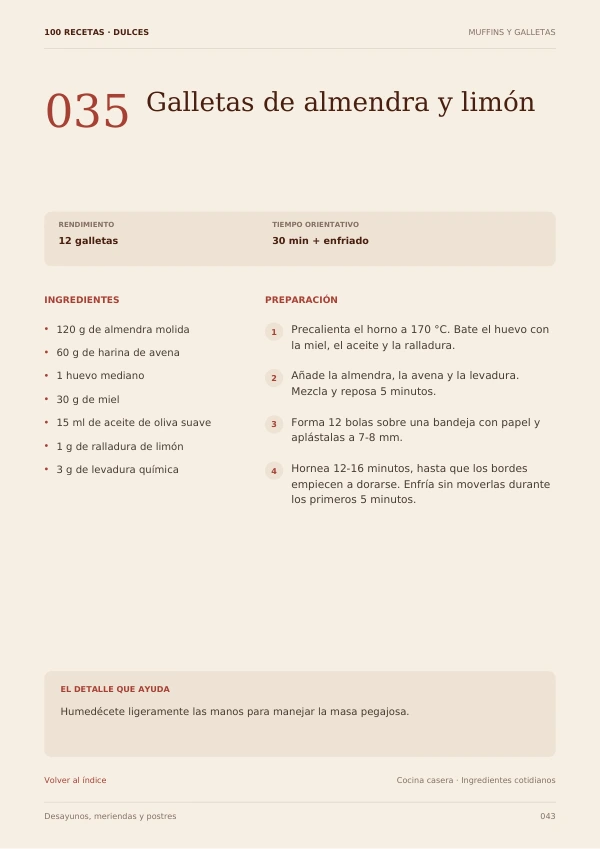
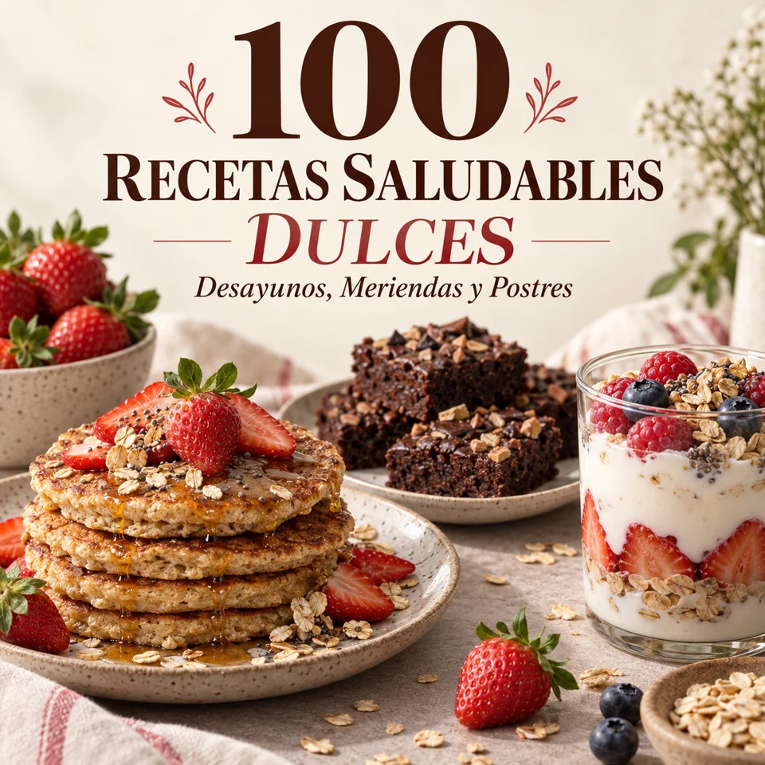
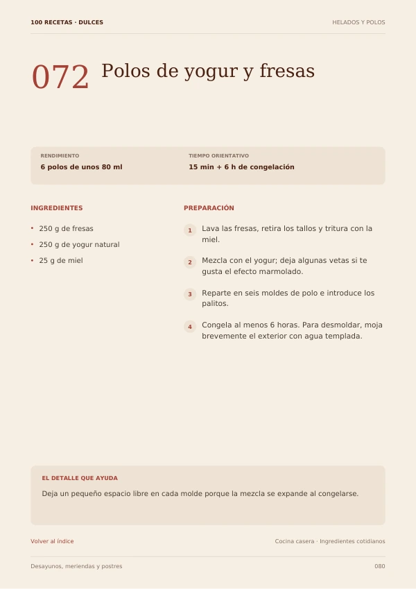

😩
Siempre las mismas ideas
Abres la nevera y terminas preparando lo de siempre porque no sabes qué hacer.
Oferta por tiempo limitado
¡Aprovecha ahora!
100 recetas dulces fit para salir de la rutina y disfrutar desayunos, meriendas y postres deliciosos.


Ten a mano nuevas ideas para esos momentos en los que quieres algo dulce sin complicarte en la cocina.
Abres la nevera y terminas preparando lo de siempre porque no sabes qué hacer.
Recetas pensadas para consultar rápido, con ingredientes y preparación bien organizados.
Deja de guardar publicaciones sueltas. Reúne 100 opciones en un solo lugar.
No es una lista aburrida de nombres. Cada receta está organizada para que puedas elegir, consultar y preparar con facilidad.


100Una colección visual con alternativas para diferentes momentos del día.
Empieza el día con una opción dulce diferente.
Ideas prácticas para acompañar tu tarde.
Opciones para cuando aparece el antojo de algo dulce.
“Me gustó porque está todo mucho más organizado. Cuando quiero preparar algo dulce, abro el recetario y elijo.”
“Lo que más uso son las ideas de merienda. Los pasos son claros y puedo mirar todo desde el móvil mientras preparo.”
“Quería variar los postres de la semana y encontré muchas opciones que no tenía guardadas. Muy práctico.”
Tu colección digital para tener nuevas ideas dulces siempre a mano.
Después de la confirmación de la compra, recibirás acceso al material digital para consultarlo en tus dispositivos.
Sí. El contenido está pensado para que puedas consultarlo cómodamente desde móvil, tableta u ordenador.
Incluye 100 ideas dulces fit distribuidas entre desayunos, meriendas y postres.